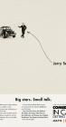

Comedians in Cars Getting Coffee
Stephen Klancher
...has seen 3
...has seen 1.1 hours
...has not seen 16.9 hours

Timeline
Most Recent:
Zach Galifianakis: From The Third Reich To You
...has seen 3
...has seen 1.1 hours
...has not seen 16.9 hours
Timeline
Most Recent:
Zach Galifianakis: From The Third Reich To You


Ricky Gervais: Mad Man in a Death Machine Airs on 2012-08-02
S1 - E2 of Comedians in Cars Getting Coffee
S1 - E2 of Comedians in Cars Getting Coffee
Alec Baldwin: Just a Lazy Shiftless Bastard Airs on 2012-08-16
S1 - E4 of Comedians in Cars Getting Coffee
S1 - E4 of Comedians in Cars Getting Coffee
Joel Hodgson: A Taste of Hell From on High Airs on 2012-08-23
S1 - E5 of Comedians in Cars Getting Coffee
S1 - E5 of Comedians in Cars Getting Coffee
Bob Einstein: Unusable on the Internet Airs on 2012-08-30
S1 - E6 of Comedians in Cars Getting Coffee
S1 - E6 of Comedians in Cars Getting Coffee
Barry Marder: You Don't Want to Offend a Cannibal Airs on 2012-09-06
S1 - E7 of Comedians in Cars Getting Coffee
S1 - E7 of Comedians in Cars Getting Coffee
Colin Quinn & Mario Joyner: I Hear Downton Abbey is Pretty Good… Airs on 2012-09-13
S1 - E8 of Comedians in Cars Getting Coffee
S1 - E8 of Comedians in Cars Getting Coffee
Carl Reiner & Mel Brooks: I Want Sandwiches, I Want Chicken Airs on 2012-09-20
S1 - E9 of Comedians in Cars Getting Coffee
S1 - E9 of Comedians in Cars Getting Coffee
Michael Richards: It's Bubbly Time, Jerry Airs on 2012-09-27
S1 - E10 of Comedians in Cars Getting Coffee
S1 - E10 of Comedians in Cars Getting Coffee
Sarah Silverman: I’m Going To Change Your Life Forever Airs on 2013-06-13
S2 - E1 of Comedians in Cars Getting Coffee
S2 - E1 of Comedians in Cars Getting Coffee
Don Rickles: You'll Never Play the Copa Airs on 2013-07-04
S2 - E4 of Comedians in Cars Getting Coffee
S2 - E4 of Comedians in Cars Getting Coffee
Kevin Hart: You Look Amazing in the Wind Airs on 2014-11-06
S5 - E1 of Comedians in Cars Getting Coffee
S5 - E1 of Comedians in Cars Getting Coffee
Amy Schumer: I'm Wondering What It's Like to Date Me Airs on 2014-11-13
S5 - E2 of Comedians in Cars Getting Coffee
S5 - E2 of Comedians in Cars Getting Coffee
Miranda Sings: Happy Thanksgiving Miranda Airs on 2014-11-27
S5 - E4 of Comedians in Cars Getting Coffee
S5 - E4 of Comedians in Cars Getting Coffee
Fred Armisen: I Wasn't Told About This... With Special Feature: I'm Dying, Jerry Airs on 2014-12-04
S5 - E5 of Comedians in Cars Getting Coffee
S5 - E5 of Comedians in Cars Getting Coffee
Ali Wentworth: I'm Going to Take a Percocet and Let That One Go Airs on 2014-12-11
S5 - E6 of Comedians in Cars Getting Coffee
S5 - E6 of Comedians in Cars Getting Coffee
Jimmy Fallon: The Unsinkable Legend: Part 1 Airs on 2014-12-18
S5 - E7 of Comedians in Cars Getting Coffee
S5 - E7 of Comedians in Cars Getting Coffee
Jimmy Fallon: The Unsinkable Legend: Part 2 (2014) Airs on 2014-12-18
S5 - E8 of Comedians in Cars Getting Coffee
S5 - E8 of Comedians in Cars Getting Coffee
Zach Galifianakis: From The Third Reich To You (2018) Airs on 2018-07-06
S10 - E1 of Comedians in Cars Getting Coffee
S10 - E1 of Comedians in Cars Getting Coffee
Dave Chappelle: Nobody Says, “I Wish I Had a Camera" Airs on 2018-07-06
S10 - E2 of Comedians in Cars Getting Coffee
S10 - E2 of Comedians in Cars Getting Coffee
Ellen DeGeneres: You Said It Wasn’t Funny Airs on 2018-07-06
S10 - E3 of Comedians in Cars Getting Coffee
S10 - E3 of Comedians in Cars Getting Coffee
Tracy Morgan: Lasagna With Six Different Cheeses Airs on 2018-07-06
S10 - E4 of Comedians in Cars Getting Coffee
S10 - E4 of Comedians in Cars Getting Coffee
Brian Regan: Are There Left Handed Spoons? Airs on 2018-07-06
S10 - E5 of Comedians in Cars Getting Coffee
S10 - E5 of Comedians in Cars Getting Coffee
Neal Brennan: Red Bottom Shoes Equals Fantastic Babies Airs on 2018-07-06
S10 - E8 of Comedians in Cars Getting Coffee
S10 - E8 of Comedians in Cars Getting Coffee
Alec Baldwin: Gyrating, Naked Twister Airs on 2018-07-06
S10 - E11 of Comedians in Cars Getting Coffee
S10 - E11 of Comedians in Cars Getting Coffee
Eddie Murphy: I Just Wanted To Kill (1985) Airs on 2019-07-19
S11 - E1 of Comedians in Cars Getting Coffee
S11 - E1 of Comedians in Cars Getting Coffee
Matthew Broderick: These People That Do This Stuff. They Stink. Airs on 2019-07-19
S11 - E5 of Comedians in Cars Getting Coffee
S11 - E5 of Comedians in Cars Getting Coffee
Jamie Foxx: You Got To Get The Alligator Sweat Airs on 2019-07-19
S11 - E6 of Comedians in Cars Getting Coffee
S11 - E6 of Comedians in Cars Getting Coffee
Sebastian Maniscalco: My Wife Didn't Know The Extent Of It Airs on 2019-07-19
S11 - E7 of Comedians in Cars Getting Coffee
S11 - E7 of Comedians in Cars Getting Coffee
Martin Short: A Dream World Of Residuals Airs on 2019-07-19
S11 - E8 of Comedians in Cars Getting Coffee
S11 - E8 of Comedians in Cars Getting Coffee
Mario Joyner: He Should Have Been Done That Airs on 2019-07-19
S11 - E9 of Comedians in Cars Getting Coffee
S11 - E9 of Comedians in Cars Getting Coffee
Bridget Everett: Still Hot To The Touch Airs on 2019-07-19
S11 - E11 of Comedians in Cars Getting Coffee
S11 - E11 of Comedians in Cars Getting Coffee